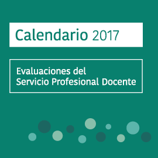

No. 1, junio de 2017
El 14 y 15 de junio se aplica la muestra nacional
de PLANEA secundaria
¿Qué?
El 14 y 15 de junio de 2017 el INEE, en coordinación con la SEP, llevará a cabo la muestra nacional del Plan Nacional de Evualuación Para los Aprendizajes (Planea), para 3° de Secundaria, referida a los centros escolares (a cargo de la SEP) y referida al Sistema Educativo Nacional (a cargo del INEE).
Nota: El 6 y 7 de junio se llevará a cabo la prueba piloto en seis entidades federativas
Esta generación de pruebas del logro permite valorar aspectos relacionados con los aprendizajes clave que deben adquirir los estudiantes al término de cada nivel de la educación obligatoria, específicamente en los campos de Lenguaje y Comunicación, Matemáticas y las habilidades Socio-Afectivas.
Además, se aplican cuestionarios de contexto para directivos, docentes y estudiantes, con el propósito de conocer las condiciones personales, familiares y escolares en que se desarrollan los aprendizajes.
¿Qué instancias intervienen en la aplicación de Planea?
El INEE: Diseña los instrumentos de evaluación; Desarrolla los lineamientos para la aplicación; Aplica las pruebas referidas al Sistema Educativo Nacional (SEN) y los controles de las referidas a los centros escolares y además reporta los resultados nacionales.
La SEP: Contribuye en el diseño de los instrumentos de evaluación; diseña la operación de la aplicación en los centros escolares; participa en el análisis de resultados; analiza la información y la utiliza para la toma de decisiones.
La autoridad educativa de cada entidad federativa: Participa en el diseño de la operación de la aplicación en cada entidad federativa, son los responsables de la aplicación de las pruebas en los centros escolares, distribuyen los resultados a cada escuela y a cada zona escolar.
¿Para qué sirven los resultados de Planea?
Cada modalidad de la prueba ofrece información importante para apoyar el trabajo de los docentes, los estudiantes, las autoridades educativas y los padres de familia; asimismo es importante informar a la sociedad de los resultados para que conozcan el estado que guarda la educación obligatoria; de esta manera se puede trabajar en conjunto para lograr un sistema educativo de calidad con equidad.
Conoce más en nuestro micrositio Planea
Programa de aplicaciones de las evaluaciones del INEE 2017
El propósito de Planea
Sobre el SPD
Durante el mes de junio se llevará a cabo el examen de ingreso al Servicio docente en educación básica.
10 de junio al 02 de julio: Aplicación de la evaluación de ingreso a la educación básica
¿Por qué una evaluación e ingreso?
La evaluación de ingreso al Servicio público docente tiene la finalidad de medir las capacidades y aptitudes de quienes aspiran a ingresar al magisterio; dicha evaluación garantiza la idoneidad de los docentes que están en las aulas de todas las escuelas del Sistema Educativo Nacional (SEN) y coadyuva a mejorar la calidad de la educación en México. Además, favorece la igualdad de oportunidades para quienes desean ejercer la docencia en el SEN.
¿Quiénes pueden participar en la evaluación e ingreso a servicio docente?
• Egresados de Escuelas Normales y demás instituciones formadoras de docentes de educación básica del país, públicas o particulares con reconocimiento de validez oficial.
• Egresados de las Instituciones de educación superior del país, públicas y particulares con reconocimiento de validez oficial.
Consulta las etapas de cada proceso de
evaluación al Servicio Profesional Docente en el calendario del mes de junio
|  |  |
EL INEE responde
Sobre la renovación de seis integrantes de nuestro Consejo Pedagógico de Evaluación Educativa:
Pregunta docente
¿Por qué solo participan algunas entidades federativas?
El INEE responde
El Consejo Pedagógico de Evaluación Educativa se integra por 18 profesionales de la enseñanza y gestión escolar de 18 entidades federativas, por lo que se convoca solo a estados que actualmente no tengan representación en este Consejo. Consulta la convocatoria aquí.
Contacto
Si tienes alguna duda sobre los procesos de evaluación al Sistema Educativo Nacional, o sobre las atribuciones del INEE, ponte en contacto con nosotros.